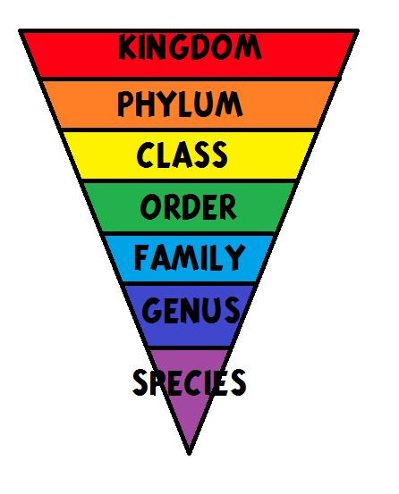

Bab 2 Klasifikasi Makhluk Hidup
A. Ciri-ciri Benda di Lingkungan Sekitar
Makhluk hidup adalah makhluk ciptaan Tuhan yang memiliki ciri – ciri kehidupan. Makhluk tak hidup atau disebut juga dengan benda mati adalah benda yang tidak memiliki ciri – ciri kehidupan.
Ciri-ciri makhluk hidup ada 5 yaitu:
- Bernafas. Bernafas adalah kegiatan menghirup oksisgen (O2) dan mengeluarkan karbon dioksida (Co2).
- Memerlukan makanan dan minuman. Setiap makhluk hidup memerlukan makanan dan minuman untuk mendapatkan energi
- Tumbuh dan Berkembang
- Berkembang Biak (Reproduksi)
- Peka Terhadap Rangsangan. Kemampuan makhluk hidup menanggapi rangsangan disebut Irrabilitas
B. Cara Mengklasifikasikan Makhluk Hidup
Klasifikasi makhluk hidup adalah cara pengelompokan makhluk hidup berdasarkan kesamaan dan ciri yang dimiliki. Tujuan dari klasifikasi makhluk hidup adalah untuk mempermudah mengenali, membandingkan, dan mempelajari makhluk hidup.
Dalam mengklasifikasikan makhluk hidup ada tahapan-tahapan yang harus dilewati. Jadi tidak sembarangan menentukan klasifikasi makhluk hidup. Berikut tahapannya :
-
Melakukan Pengamatan Sifat
Hal pertama yang harus dilakukan yaitu mengatami makhluk hidup. Proses pengamatan ini dilakukan untuk mengidentifikasi makhluk hidup satu dengan yang lain. -
Melakukan Pengelompokkan berdasarkan Ciri yang Diamati
Setelah dilakukan pengamatan selanjutnya yaitu mengelompokkannya berdasarkan ciri yang dimiliki masing-masing makhluk hidup. -
Pemberian Nama Makhluk Hidup
Setelah mengelompokkan makhluk hidup, selanjutnya yaitu memberikan nama. Pemberian nama ini sangat penting dalam klasifikasi. Sistem pemberian nama ada dua yaitu tata nama ganda (Bimomial Nomenclature) dan trinominal. Dengan diberikannya nama pada makhluk hidup akan memudahkan kita untuk memahaminya.
C. Pengklasifikasian Makhluk Hidup
Pengklasifikasian makhluk hidup ini disusun berdasarkan persamaan dan perbedaan yang diurutkan berdasarkan kelompok. Urutan kelompok ini disebut takson atau taksonomi. Orang yang pertama kali mengenalkan taksonomi yaitu Carolus Lenneaus. Tingkatan takson diperlukan untuk mengurutkan tingkatan umum ke tingkatan yang lebih spesifik. Urutan takson seperti berikut :
- Kingdom (Kerajaan)
- Filum (untuk tumbuhan) / Divisio (untuk hewan)
- Class (Kelas)
- Ordo (Bangsa)
- Familia (Keluarga)
- Genus (Marga)
- Spesies (Jenis)
Penentuan klasifikasi dengan menggunakan takson dimulai dari tingkatan yang paling rendah yaitu dari spesies (jenis) kemudian diisi naik ke genus (marga) sampai kingdom (kerajaan). Semakin tinggi tingkatannya maka jumlah organisme semakin banyak. Sedangkan semakin renda tingkatannya maka jumlah organisme semakin sedikit.